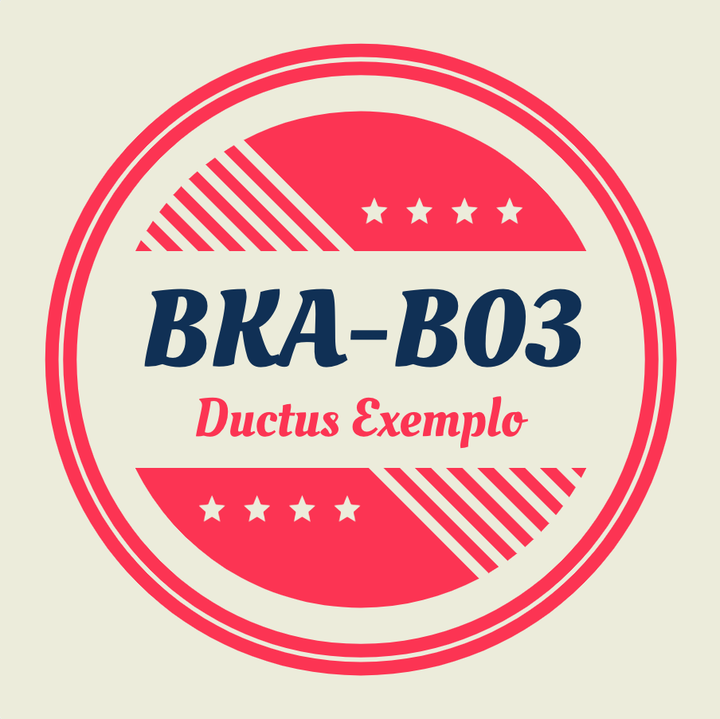
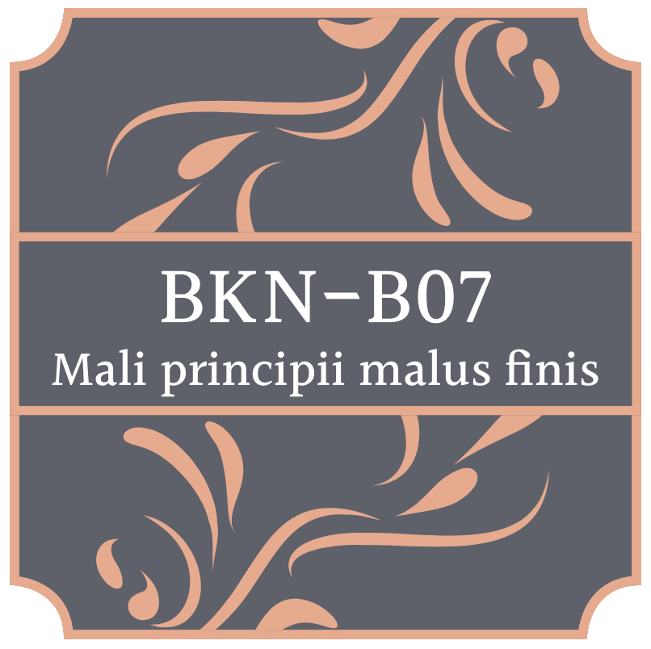
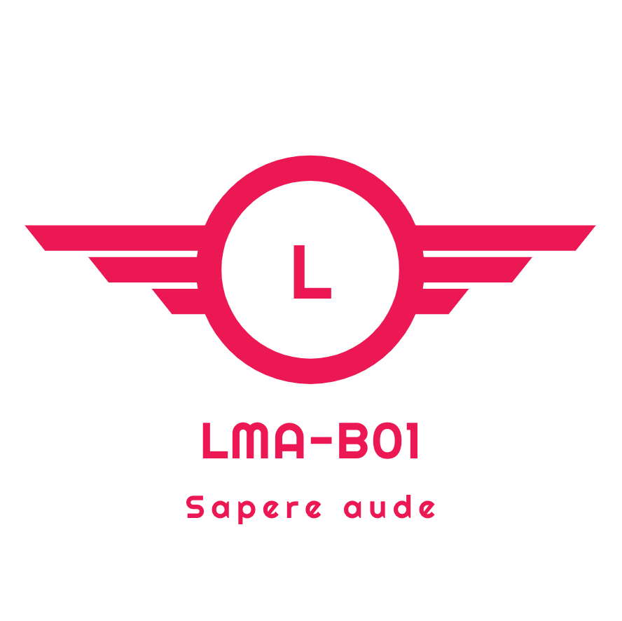

Dit is het platform voor B-cluster Onderzoek van de opleiding HAN Bedrijfskunde. Hier plaatsen we materiaal dat specifiek gericht is uit onderstaande groepen die in dit semester deze module volgen.
Voor alle algemene, propedeuse-brede informatie verwijzen we naar het materiaal op Onderwijs Online. Mocht je vragen hebben waarvoor je de antwoorden niet online hebt gevonden, dan kun je mailen naar: Witek ten Hove, David Hartsuiker of Frans Beijderwellen

Ieder team houdt de voortgang bij in een online notebook of logboek. Volg onderstaande links voor de afzonderlijke documenten:

Ieder team houdt de voortgang bij in een online notebook of logboek. Volg onderstaande links voor de afzonderlijke documenten:

Ieder team houdt de voortgang bij in een online notebook of logboek. Volg onderstaande links voor de afzonderlijke documenten: